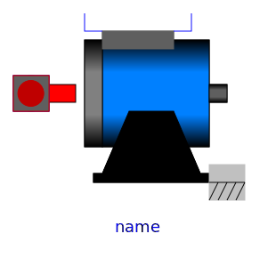

This package contains quasistationary models of DC machines; these models are fully compatible with the transient machine models of DC machines; the only difference is that electrical transients are neglected.
Quasistationary DC machine models are basically different from
quasistationary induction machine models: Quasistaionary DC machine
models neglect electrical transients, i.e., setting der(i) =
0, whereas quasistationary induction machine models are
based on time phasor theory, see QuasiStationary
Library, where e.g., L*der(i) is replaced by
j*omega*L*(I_re+j*I_im).
| Name | Description |
|---|---|
|  DC_PermanentMagnet | Quasistationary permanent magnet DC machine |
|
|
Quasistationary electrical shunt/separate excited linear DC machine |
|
|
Quasistationary series excited linear DC machine |